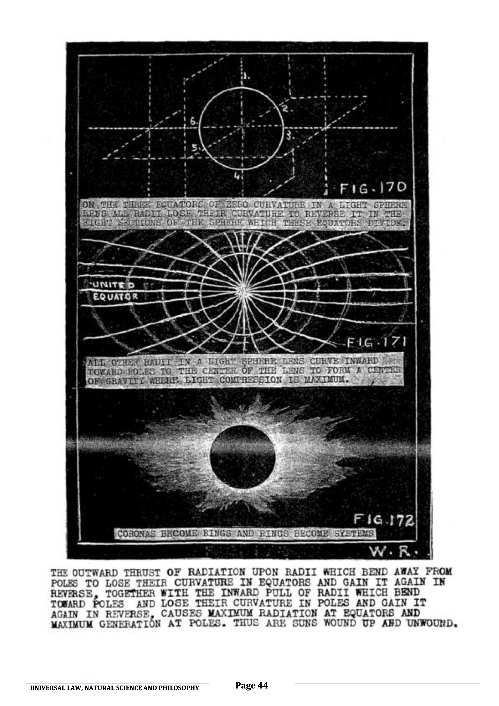
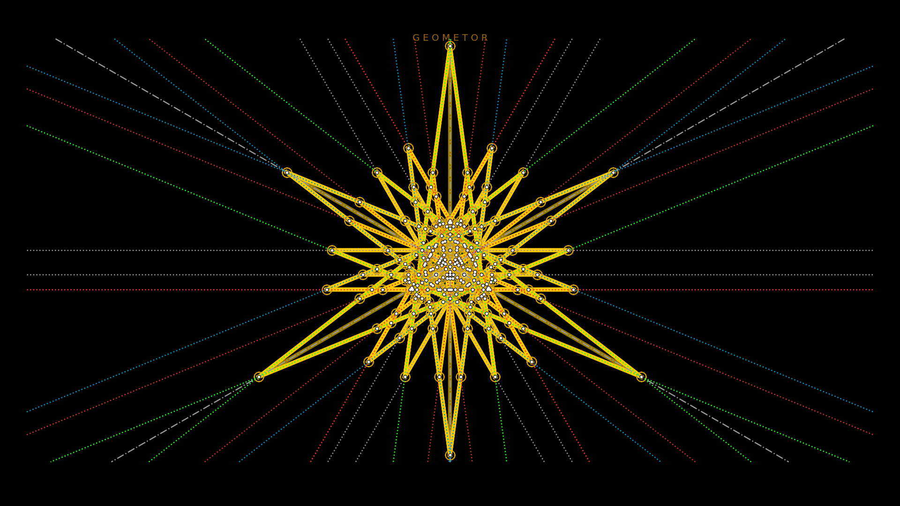

People¶
Searchable Directory of Geometers, Philosophers & Mathematical Thinkers
Browse all 49 figures across the GEOMETOR lineage—filter by source language, search by name or treatise, and sort by death date or name.
Plato
Across Meno (doubling the square via the diagonal), Republic VI–VII (the Divided Line and the four mathematical sciences lifting the soul toward Being), and Timaeus (the harmonic World-Soul scale and construction of…
Aristotle
In Posterior Analytics, Physics, De Anima, and Metaphysics IX.9 (1051a21–33), Aristotle formulated the classical theory of demonstrative science (episteme) and observed how latent geometric relations are brought from…
Euclid of Alexandria
Euclid’s thirteen books of the Elements—paired in geometor/euclid with his 94-proposition Data* (Δεδομένα, governing constructive givens in geometric analysis)—established the enduring paradigm of deductive…
Archimedes of Syracuse
Greatest mathematician of antiquity. In Measurement of a Circle (), Quadrature of the Parabola (exact triangle ratio), On the Sphere and Cylinder ( volume and surface ratio), On Spirals, Book of Lemmas (arbelos,…
Apollonius of Perga
“The Great Geometer,” whose Conics derived the parabola, ellipse, and hyperbola from a single oblique circular cone through symptomata of application of areas (parabole, elleipsis, hyperbole), conjugate diameters,…
Nicomachus of Gerasa
Neo-Pythagorean philosopher whose Introductio Arithmetica codified the fourfold Quadrivium (Arithmetic, Music, Geometry, Astronomy), proved that all superparticular and superpartient ratios unfold deductively from…
Menelaus of Alexandria
Founder of intrinsic spherical geometry. Defining the spherical triangle formed by arcs of three great circles (Sphaerica Book I, where angle sums strictly exceed two right angles without parallel lines) and proving…
Claudius Ptolemy
In Almagest Book I.10, Ptolemy gave antiquity’s most economical single-circle construction of both the regular decagon and regular pentagon via the Golden Section alongside Ptolemy’s Cyclic Quadrilateral Theorem ()…
Pappus of Alexandria
Last great synthesist of the Alexandrian mathematical school. Across Books III–VIII of his Synagoge (Mathematical Collection), Pappus united the three classical means in one semicircle (Book III), generalized…
Proclus Lycius
Head (diadochus) of the Athenian Academy whose Commentary on the First Book of Euclid’s Elements preserves both Eudemus’s lost history of early Greek geometry and a profound philosophy of mathematical imagination…
Leonardo Pisano — Fibonacci
Pisan mathematician whose Liber Abaci introduced Hindu–Arabic positional arithmetic, unit-fraction decompositions, and the additive Fibonacci recurrence to Latin Europe, while his Practica Geometriae transmitted…
St. Thomas Aquinas
In Super Boetium De Trinitate (Questions 5 and 6) and his commentaries on Aristotle’s Posterior Analytics, Physics, De Anima, and Metaphysics, Aquinas articulated how mathematics stands uniquely poised between…
Nicholas of Cusa
German cardinal, jurist, and philosopher whose De Docta Ignorantia (On Learned Ignorance, Book I) employed exact transsumptive mathematical symbolism to contemplate the Infinite: as radius grows without bound, the…
Piero della Francesca
Master painter and mathematician of Borgo Sansepolcro whose Libellus de Quinque Corporibus Regularibus (Codex Vaticanus Urbinas latinus 632) computed exact quadratic and golden radical coordinates, reciprocal dual…
Fra Luca Pacioli & Leonardo da Vinci
Franciscan mathematician Luca Pacioli—steward of Piero della Francesca’s polyhedral geometry and mathematical collaborator with Leonardo da Vinci at the court of Milan—published both the encyclopedic Summa (1494) and…
Albrecht Dürer
Master printmaker and geometer of Nuremberg whose Underweysung der Messung mit dem Zirckel und Richtscheyt (1525) founded German constructive geometry: introducing parallel-projection conic sections (anticipating…
Johannes Kepler
In Mysterium Cosmographicum (1596), Strena seu de Nive Sexangula (1611), and Harmonices Mundi (1619), Kepler famously declared: .. epigraph:: Kepler nested the five Platonic solids among the planetary spheres,…
Blaise Pascal
At age sixteen, Pascal generalized Pappus’s two-line hexagon theorem to any six points inscribed on a non-degenerate conic (Essay pour les Coniques, 1640): opposite sides of an inscribed hexagon meet in three…
Giovanni Ceva
Milanese and Mantuan geometer who elevated Archimedes’ Law of the Lever into pure incidence geometry: by placing virtual statical weights at the vertices of a triangle (and tetrahedron), Ceva proved Ceva’s…
Leonhard Euler
In St. Petersburg memoir E325 (Solutio facilis, 1765), Euler computed the exact algebraic distances among the four classical centers of any scalene triangle—discovering and proving the collinearity of the Euler Line ().
Lorenzo Mascheroni
Pavian mathematician and poet whose La Geometria del Compasso (1797) proved that every Euclidean ruler-and-compass construction—including circle division and straight-line intersection—can be executed cleanly with…
Karl Wilhelm Feuerbach
In Nuremberg (Eigenschaften einiger merkwürdigen Punkte des geradlinigen Dreiecks, 1822), Feuerbach proved that the circle through the side-midpoints and altitude-feet (center , radius ) touches the incircle…
Jakob Steiner
Swiss synthetic geometer whose 1833 Berlin treatise proved the Poncelet–Steiner Theorem: given a single fixed circle and its center drawn once on the plane, every Euclidean ruler-and-compass construction can be…
Karl Georg Christian von Staudt
Architect of pure synthetic projective geometry. In Geometrie der Lage (1847) and Beiträge (1857), von Staudt liberated projective space from metric length by defining the fourth harmonic point purely via the…
Oliver Byrne
Civil engineer and mathematician whose 1847 Pickering edition replaced traditional lettered labels (AB, ∠ABC) with primary-colored Bauhaus-avant-la-lettre visual tokens—transforming Euclidean deduction into…
John Casey
Irish geometer who bridged classical Euclid and late-nineteenth-century triangle and circle geometry, discovering Casey’s Generalized Ptolemy Theorem ( for four circles tangent to a fifth circle, providing a pure…
Julius Petersen
Danish geometer and graph-theorist whose 1879 handbook codified compass-and-straightedge problem solving into systematic two-locus intersection (Method of Loci) and geometric transformations (translation, rotation,…
Émile Lemoine
Discoverer of the Symmedian / Lemoine Point (1873) and creator of Géométrographie (La Géométrographie ou l’art des constructions géométriques, 1902)—the first quantitative operational complexity calculus (,…
Henri Poincaré
Universal mathematician whose philosophy of geometric conventionalism traced perceptual space to Lie groups of rigid displacements and introduced the Poincaré conformal disk dictionary—translating every hyperbolic…
Ernst Haeckel
Naturalist, marine biologist, and scientific illustrator whose Kunstformen der Natur (Art Forms in Nature, 1899–1904) revealed icosahedral, dodecahedral, hexagonal, and logarithmic spiral geometries in radiolarians,…
Jay Hambidge
Artist and scholar of classical design who distinguished passive static symmetry (rational linear grids) from dynamic symmetry—proportions commensurable in square (potentia, Euclid Book X): root-, root-, and root-…
Felix Klein
In his Erlangen Program (1872), Klein unified Euclidean, affine, elliptic, hyperbolic, inversive, and projective geometries as invariant theories of nested transformation groups. In Famous Problems of Elementary…
Moritz Pasch
Pioneer of modern axiomatic rigor whose Vorlesungen über neuere Geometrie (1882) exposed Euclid’s unstated planar order assumptions—formulating Pasch’s Axiom (a line meeting one side of a triangle and missing the…
David Hilbert
In Grundlagen der Geometrie (1899), Hilbert completed Euclid’s deductive program for the modern era by making explicit the order (betweenness) and continuity postulates tacitly read off diagrams since antiquity,…
Sir D’Arcy Wentworth Thompson
Scottish biologist, mathematician, and classical scholar whose On Growth and Form (1917) revealed physical forces and geometric invariance across living structures: Plateau’s and minimal-surface junctions, Maraldi’s…
Petrus Hoenen, S.J.
Dutch Jesuit physicist and philosopher at the Pontifical Gregorian University in Rome. In De Noetica Geometriae Origine Theoriae Cognitionis (1954), Hoenen engaged Hilbert, Russell, and non-Euclidean geometry…

Walter Russell & Lao Russell
Artist, sculptor, and natural philosopher Walter Russell and co-author Lao Russell articulated a geometric wave-field cosmogony built on the interpenetrating cube and sphere—modeling compression and expansion as…
Hans Kayser
Founder of modern Pythagorean Harmonics (Akróasis: The Theory of World Harmonics, Lehrbuch der Harmonik). Kayser investigated integer and superparticular string ratios, the lambdoma matrix, crystallographic…
Nathan Altshiller-Court
Master pedagogue of modern synthetic geometry whose College Geometry (1925) systematically trains the geometer in the four-part constructive discipline (Analysis, Construction, Proof, Discussion), parsed one item per…
Bertrand Russell
Across An Essay on the Foundations of Geometry (1897) and Part VI (Space) of The Principles of Mathematics (1903), Bertrand Russell analyzed the philosophical relationship between projective order, Cayley–Klein…
H. E. Huntley, Mario Livio & Alfred S. Posamentier / Ingmar Lehmann
Across The Divine Proportion (Huntley, 1970), The Golden Ratio (Livio, 2002), and The Glorious Golden Ratio (Posamentier & Lehmann, 2011), modern mathematical expositors synthesized Fibonacci matrix algebra, spira…
Fred W. Seelig
Independent geometric researcher whose meticulous 353-folio manuscript archive and 59 analytical spreadsheets explore triangle concurrency, harmonic duality, circle–square proportions, and classical ratios from first…

George Odom
Artist and geometer who discovered one of the simplest golden section constructions in history (published as Problem E3007 in the American Mathematical Monthly, 1983, proved by H. S. M. Coxeter): joining the…

Roger V. Jean
Mathematician whose treatise Phyllotaxis: A Systemic Study in Plant Morphogenesis (Cambridge University Press, 1994) unified continued-fraction divergence theory, visible opposed parastichy pairs, allometric growth…
Alexander Bogomolny — Cut-the-Knot
Mathematician and master expositor whose encyclopedic portal Interactive Mathematics Miscellany and Puzzles (Cut-the-Knot) curated dozens of elegant golden section constructions discovered by Odom, Hofstetter, Tran…
Clark Kimberling & Forum Geometricorum
Through the Encyclopedia of Triangle Centers (ETC, initiated 1994/1998 and now surpassing 53,000 centers) and the open-access journal Forum Geometricorum (founded by Paul Yiu), Clark Kimberling and collaborators…
Heron of Alexandria
Synthesist of Alexandrian pure proof and algorithmic engineering. In Metrica (rediscovered in 1896 in the Codex Constantinopolitanus), Heron proved Heron’s Area Formula via cyclic quadrilaterals alongside iterative…
Ron Knott — Fibonacci Numbers & the Golden Section
Mathematician at the University of Surrey whose acclaimed educational corpus connected Fibonacci recurrences, Lucas identities, Pisano modular periods, Pythagorean triple generators, Zeckendorf representations,…
Norman J. Wildberger
Author of Divine Proportions: Rational Trigonometry to Universal Geometry (2005). By replacing distance with quadrance and transcendental angle with spread , Wildberger stripped trigonometry of infinite power series…